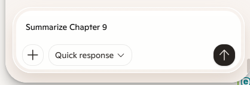

Happy Manic Monday, brothers — and yes, I know, that's two different songs about two different days of the week fighting each other in my head right now.
Something more personal first. Ever since my brain tumor, I've felt a steady decline in the things that used to make me feel connected to the world — having value, having meaning. Writing these emails to you guys has become one of the few things that reliably brings me joy, so thank you for being on the other end of them.
Today I want to walk through the layers of Bible-study resources I've picked up over the decades, because AI is really just the latest layer, not a replacement for any of the others. It started with Strong's Exhaustive Concordance, then the Englishman's Greek Concordance, then Vine's Dictionary. For years I listened to hundreds of audio-cassette sermons from DTS faculty — I tragically threw the whole collection away during a work trip to China back in 2000, which still stings. Eventually came PC Study Bible, then Logos, which now sits at over 18,000 books in my library. I avoided commentaries for a long time, worried they'd get in the way of hearing the Holy Spirit directly, but I've come around to using them too. Somewhere in there I also picked up the Creeds — the Apostles' and Nicene — as a filter for what's essential versus what isn't. And I embraced the idea that all truth is God's truth, which let me bring my engineering background — math, physics, science — into the same room as my faith instead of treating them as rivals.
AI is just the newest resource in that stack. It doesn't replace Bible study any more than a concordance does — it supplements it. Here's the method I've landed on:
- Choose a passage or book. I've been using Daniel as my example.
- Choose an AI tool — I use Copilot inside Edge, but NotebookLM and Perplexity work well too. Happy to share a fuller list if anyone wants it.
- Open the passage — I keep the Books of the Bible organized in a Dropbox folder and open Daniel from there.
- Click “Chat” in the top right of the browser.
- Ask any question you want. I asked it to summarize chapter 9.

Some general questions I've found useful for almost any passage: What does this reveal about God's character? About the human condition? What was the author's purpose and original audience? What's the historical context? The genre? What themes repeat? What commands or promises show up? How does this compare with other passages? How does it fit the larger context of Scripture? And, of course, what's the practical application for me today? Two more worth adding: How is Jesus depicted or foreshadowed here? And where does this fit in God's larger redemption plan and timeline?
I haven't tried this next part yet, but I suspect it might work better on Perplexity than Copilot: asking original-language questions. Things like verb tense and aspect, voice and mood, whether a command implies a one-time action or an ongoing practice (the Greek present imperative behind “keep loving,” for instance), noun versus verb forms of the same root word (ἀγἄπη the noun vs. ἀγαπἄω the verb), or nuanced word meanings — like the Hebrew רַחוּם (rakhum), which is tied etymologically to “womb” and carries that whole weight of compassion with it.
All of this maps neatly onto Inductive Bible Study — Observation, Interpretation, Correlation, Application — and AI is honestly perfect for the Observation step.
A few more resources for anyone wanting to dig into word-level nuance without AI: interlinear Bibles, study Bibles with language notes, lexicons and concordances, dedicated word-study tools, and general online Bible-study resources. Any of these will get you most of the way there on their own.
Comments